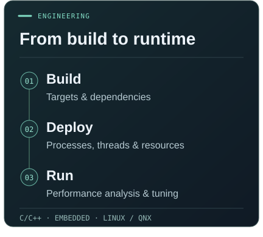
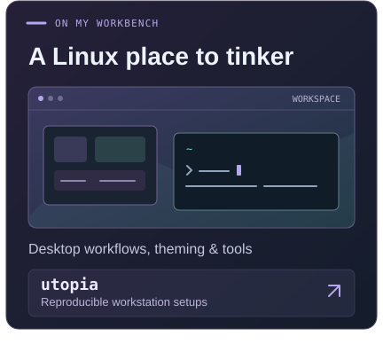
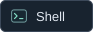
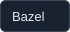

I'm Chikee, a software engineer working with C/C++ and embedded systems, with a focus on software architecture and cross-platform integration.
Here on GitHub, I tinker with Linux workstations and developer tools. Some of that lives in utopia →.


Languages

Platforms & build tools
